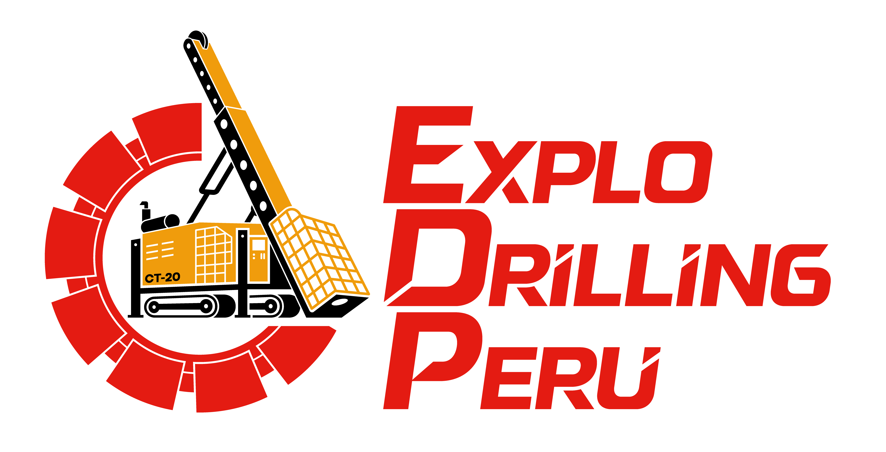

SIG · SSOMAC
Reporte de Acto y Condición
Registra de forma rápida una observación detectada en tu lugar de trabajo.
Este reporte será revisado por Seguridad/SIG antes de convertirse en una ocurrencia formal.
Si te equivocas al seleccionar Acto o Condición, el equipo revisor podrá corregirlo.